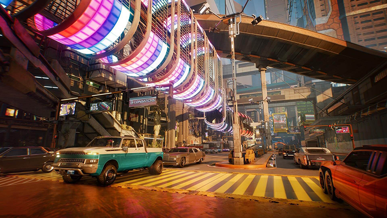

若我超脱自然，便将绝不再用” “ 任何自然物化作身躯之外形” “而只求古希腊金匠人用鎏金” “和镀金锤铸的绝美造型” “以使昏昏欲睡的帝王清醒” “或停留在金色枝头声声歌唱” “ 把过往，今日，或明朝之事” “唱给拜占庭的贵妇王公们听” ————《驶向拜占庭》 叶芝（爱尔兰） |
 这就是赛博朋克，这就是2077年的夜之城。一个资本主义发展到极致的世界，金钱与消费植入骨髓，娱乐麻痹了全体公民。活在夜之城是什么样的感觉？或许可以引用朱迪说的一句话——“哪怕你已经一无所有，他们还是要不断地攫取不断地攫取。”` 活在这作城市里的人注定以悲剧收场，而一个以残躯化烈火的疯子（V）出现在如此绝望的赛博时代，这才符合朋克的精神。 夜之城很美，市井的烟火气与不食烟火的高楼在夜之城里得到了完美的结合；夜之城很冷，一周几乎有三分之一的时间都在下雨，但阴雨永远无法掩盖人性的光芒
|